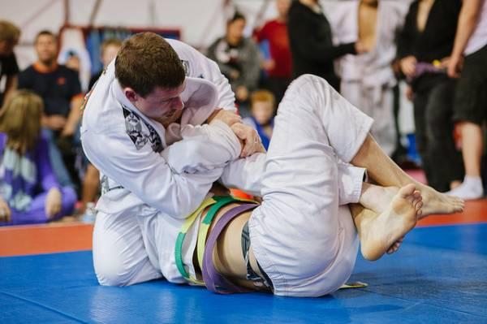

Principales disciplinas
El jiu-jitsu brasileño (o BJJ) es un arte marcial, deporte de combate y sistema de defensa personal desarrollado en Brasil. Se centra principalmente en la lucha cuerpo a cuerpo en el suelo, usando para ello luxaciones, estrangulaciones, inmovilizaciones y derribos. El principal objetivo del jiu-jitsu brasileño es someter al rival mediante una luxación o estrangulación sin necesidad de usar golpes, de ahí que se le denomine a veces "arte suave". Estas técnicas tienen su origen en el judo japonés, particularmente en su apartado de lucha en suelo conocido como ne waza, llevado a Brasil por los maestros Mitsuyo Maeda y Geo Omori. Estas técnicas fueron posteriormente adaptadas en su aspecto deportivo por la Familia Gracie, transmitiéndolas a través de sucesivas generaciones. Para promover y demostrar la eficacia de este arte marcial participaron en numerosos eventos deportivos de artes marciales y luchas pactadas durante el siglo XX en Brasil, en ocasiones con reglas mínimas ("Vale tudo"). Este arte marcial está basado en la idea de que un individuo pequeño puede defenderse con éxito frente a un rival más grande y fuerte gracias al uso eficaz de la técnica, llevándolo al suelo, desgastándolo y finalmente sometiéndolo con una luxación o estrangulación. El BJJ tiene un amplio circuito deportivo y puede ser usado en otras disciplinas, notablemente en las artes marciales mixtas (MMA) o competiciones de "grappling", como comúnmente se denomina o los torneos sin kimono en los que suelen usarse multitud de técnicas de otras disciplinas, como la lucha libre, lucha greco romana o el sambo. Su sistema de entrenamiento está casi enteramente basado en la competición, consistiendo normalmente en alternar acondicionamiento físico, instrucción técnica y lucha, lo que se suele llamar "rodar" o "rolling". Normalmente en el BJJ se utiliza un uniforme o gi similar al del judo, aunque en tiempos modernos también se entrena y compite sin él, en lo que se conoce como modalidad "no-gi" o "grappling". En el jiu-jitsu brasileño se usa un sistema de rangos por cinturones o grados basado en el de otras artes marciales más tradicionales provenientes del Japón moderno, como el judo,
El muay thai (del tailandés: มวยไทย, RTGS: Muai Thai, AFI: [mūaj tʰāj]), conocido también como boxeo tailandés, o tradicionalmente como el arte de las ocho extremidades es un deporte de contacto de los más peligrosos que hay y por lo tanto se le considera un deporte de contacto extremo e ilegal en varios países del mundo. Tiene como base el Muay Boran, el cual se desarrolla de pie por medio de golpes con técnicas combinadas de puños, pies, rodillas y codos, además de algunos barridos, sujeciones (para golpear) y lanzamientos. Es muy similar a otros sistemas de boxeo indochino, como el prodal de Camboya, el tomoi de Malasia, el lethwei de Birmania y el muay Lao de Laos.Hoy en día el muay thai se ha convertido en un símbolo nacional de la historia y la identidad del Reino de Tailandia. Sus raíces están en el Muay Boran, variante tradicional y arte marcial que incluye figuras, técnicas a mano abierta, luxaciones, lanzamientos y derribos. En la actualidad esta disciplina complementa al muay thai junto con el boxeo occidental.Debido a su dureza, el muay thai suele ser considerado por muchos como un deporte extremo, lo cual favorece la realización de apuestas, y por lo tanto un deporte que se considera ilegal en varios países del mundo, como en algunos estados de Estados Unidos. Es una de las disciplinas más utilizadas en las artes marciales mixtas o MMA (Mixed Martial Arts).

El judo como deporte permite una educación física integral, potenciando por medio de la práctica de sus técnicas las posibilidades psicomotrices, tales como la ubicación espacial, la perspectiva, el ambidextrismo, la lateralidad, la coordinación conjunta e independiente de ambas manos y pies, y las diferentes acciones motrices como lanzar, tirar, empujar, arrastrarse, saltar, rodar, caer, entre otras; y las relaciones con otras personas, haciendo uso del juego y la lucha como un elemento integrador y dinamizador permitiendo la iniciación deportiva de forma adaptada, además de buscar un acondicionamiento físico general e idóneo.Actualmente, el judo en su forma deportiva se ha especializado en los lanzamientos, con algunas pocas sumisiones, luxaciones y estrangulaciones. No obstante, en su práctica integral como arte marcial no se ha dejado de lado la enseñanza de los golpes, los desarmes, las luxaciones articulares, el uso de los puntos de presión y los métodos de reanimación, lo que lo hace muy apropiado para el uso por fuerzas de seguridad, cascos azules, policías, militares, paramédicos, entre otros